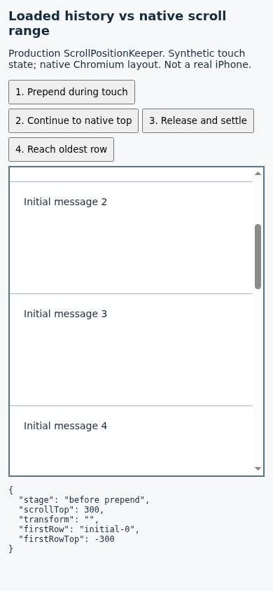
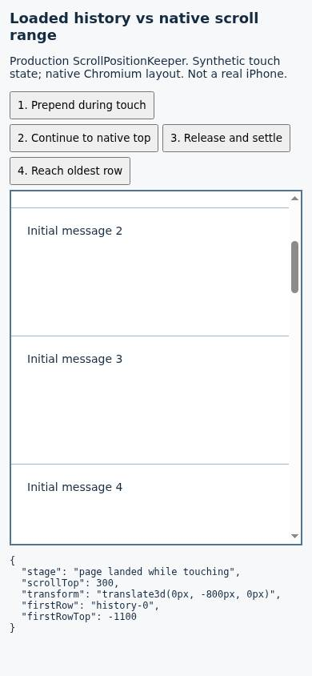
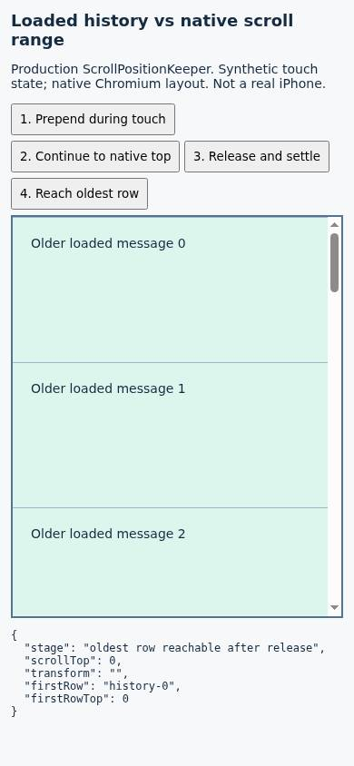
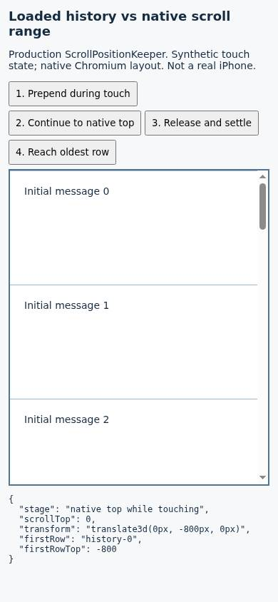

#7221 · Deferred scroll compensation hides prepended history
Verdict: PARTIALLY REPRODUCED · Root-cause confidence: high for the scroll-controller defect. Real iOS/WKWebView behavior and rubber-band write safety remain unverified.
1. TL;DR
When older messages are prepended, the scroll controller must adjust the native scroll position to keep the reading row steady. With its iOS deferral mode enabled, it instead translates the content upward while a touch is active. That preserves the visible reading row but moves the newly loaded rows above the native scroll range: native scrollTop reaches zero while the oldest row is still 800 pixels above the viewport. Releasing the touch allows the compensation to become a real scroll position, after which the older rows can be reached. This was reproduced twice against unchanged trusted production code, including native Chromium layout; a real iPhone and repeated UIKit swipe physics were not tested.
2. Claims vs findings
| Claim | Finding | Evidence |
|---|---|---|
| Loaded older rows can remain unreachable during a touch. | Verified at controller boundary | Both fresh checkouts produce scrollTop=0 and firstHistoryTop=-800 after prepending five 160px rows. |
| The rows become reachable after touch release and settling. | Verified | Touchend is delivered; the transform clears, scrollTop becomes 800, and a subsequent scroll to zero reaches history-0. |
| The deferral policy is enabled on iOS WebKit. | Verified in trusted source | Both scroll-body construction and the platform predicate were inspected. |
| Physical iOS 18.7 behavior, exact large correction magnitude, climb timings and bounce-write losses. | Unverified | No iPhone, iOS Simulator, native WKWebView, network pagination replay, or UIKit physics model was used. |
3. Environment
- Public repository get-bb/bb, fetched origin/main at
e61446e15a0bb3e6df551e45c3aba5c5187ffad3. - Linux 4.19.0-gvisor; Node v22.19.0; pnpm 9.15.0; Vitest 4.1.12; Vite 8.3.6.
- Browser Automation local/headless Chrome 149.0.0.0 on an enrolled test host; 390×844 viewport. Native Chromium UA; the iOS-only controller option is set explicitly, not inferred from a spoofed UA.
- Separate temporary checkouts named base and verify. Each had its own frozen install and complete 73-task build. The first cold build needed the existing Plugin SDK build task before retrying because its dist modules were absent.
- No provider, live BB instance, user account, thread database, or runtime data was used. Browser diagnosis runs on fresh about:blank pages using an in-memory bundle compiled separately in each checkout. Local Vite servers on ports 18371/18373 could not be reached by the enrolled-host browser; this setup was abandoned, not counted as reproduction evidence. No application data directory or server port is needed by the final reproduction.
4. Minimal reproduction
- Save the regression patch shown inline below as
repro.patch. It adds two parameterized cases to the existing test file, reusing the trusted repository's layout fixture. No production code is changed. - Run these commands in a new trusted checkout. The expected regression result is exit 1 for the deferral-enabled case and a passing deferral-disabled control.
git clone https://github.com/get-bb/bb.git base cd base git checkout --detach e61446e15a0bb3e6df551e45c3aba5c5187ffad3 pnpm install --frozen-lockfile --prefer-offline pnpm exec turbo run build --filter=@get-bb/plugin-sdk pnpm exec turbo run build git apply /path/to/repro.patch pnpm exec turbo run test --filter=@bb/app --force -- src/components/ui/scroll-position-keeper.test.ts -t 'issue 7221' node slopcop-browser-build.mjs bb browser-automation open --backend local --headless --machine <your-host-id> --json bb browser-automation run <returned-session-id> --script "$(cat slopcop-browser-driver.js)" --json
- The test starts with twelve 160px rows, scrollTop 300 and a 500px viewport. It delivers touchstart, prepends five 160px history rows, reconciles, verifies the reading row remains steady, scrolls to native zero, and advances two seconds without releasing. It then delivers touchend, advances 400ms and checks recovery.
- Expected: when native scrollTop reaches zero, the oldest loaded row is at viewport zero. Actual: it remains at -800, although it is present in the DOM.
With deferral enabled, both clean runs: afterPage: scrollTop=300, transform="translate3d(0, -800px, 0)" atNativeTop: scrollTop=0, firstHistoryTop=-800, transform="translate3d(0, -800px, 0)" afterRelease: scrollTop=800, transform="" After scrolling back to zero following release: firstHistoryTop=0. AssertionError: expected -800 to be +0 // Object.is equality Tests 1 failed | 1 passed | 57 skipped (59) With deferral disabled: the native-top reachability assertion passes. Existing suites: 3 passed; 60 tests passed; the 2 diagnostic cases were excluded.
- For native-layout evidence, save the diagnostic HTML and browser-driver builder from the inline sections below as
slopcop-repro.htmlandslopcop-browser-build.mjsin the checkout root. The builder bundles the unchanged production controller. The four buttons deliver synthetic touch state, prepend history, drive native scrolling, and release the touch. Use them in order; capture before loading, at the native top, and after the fourth button. This is a diagnostic harness, not screenshots of the full BB UI.




Regression test
The existing fixture lives in the same file; apply the patch below rather than executing this fragment as a standalone module.
it.each([false, true])("issue 7221: loaded history is reachable at the native top (defer=%s)", (deferWrites) => {
vi.useFakeTimers({ toFake: ["setTimeout", "clearTimeout", "performance"] });
const initialRows = rowsOf(12, 160);
const timeline = createTimeline(initialRows, { deferWrites });
timeline.userScrollTo(300);
vi.advanceTimersByTime(500);
const anchorBefore = timeline.topOf("row-2");
timeline.scrollElement.dispatchEvent(new TouchEvent("touchstart"));
timeline.setRows([...rowsOf(5, 160, "history"), ...initialRows]);
timeline.keeper.reconcile();
expect(timeline.topOf("row-2")).toBe(anchorBefore);
const afterPage = {
scrollTop: timeline.scrollElement.scrollTop,
transform: timeline.content.style.transform,
};
timeline.userScrollTo(0);
vi.advanceTimersByTime(2000);
const atNativeTop = {
scrollTop: timeline.scrollElement.scrollTop,
firstHistoryTop: timeline.topOf("history-0"),
transform: timeline.content.style.transform,
};
timeline.scrollElement.dispatchEvent(new TouchEvent("touchend"));
vi.advanceTimersByTime(400);
const afterRelease = {
scrollTop: timeline.scrollElement.scrollTop,
transform: timeline.content.style.transform,
};
timeline.userScrollTo(0);
expect(timeline.topOf("history-0")).toBe(0);
console.log(JSON.stringify({ deferWrites, afterPage, atNativeTop, afterRelease }));
expect(atNativeTop.firstHistoryTop).toBe(0);
});
Complete regression patch — save as repro.patch
diff --git a/apps/app/src/components/ui/scroll-position-keeper.test.ts b/apps/app/src/components/ui/scroll-position-keeper.test.ts
index 65f296594b..6f43a7285d 100644
--- a/apps/app/src/components/ui/scroll-position-keeper.test.ts
+++ b/apps/app/src/components/ui/scroll-position-keeper.test.ts
@@ -7,6 +7,40 @@ import { ScrollPositionKeeper } from "./scroll-position-keeper";
const VIEWPORT_HEIGHT = 500;
+it.each([false, true])("issue 7221: loaded history is reachable at the native top (defer=%s)", (deferWrites) => {
+ vi.useFakeTimers({ toFake: ["setTimeout", "clearTimeout", "performance"] });
+ const initialRows = rowsOf(12, 160);
+ const timeline = createTimeline(initialRows, { deferWrites });
+ timeline.userScrollTo(300);
+ vi.advanceTimersByTime(500);
+ const anchorBefore = timeline.topOf("row-2");
+ timeline.scrollElement.dispatchEvent(new TouchEvent("touchstart"));
+ timeline.setRows([...rowsOf(5, 160, "history"), ...initialRows]);
+ timeline.keeper.reconcile();
+ expect(timeline.topOf("row-2")).toBe(anchorBefore);
+ const afterPage = {
+ scrollTop: timeline.scrollElement.scrollTop,
+ transform: timeline.content.style.transform,
+ };
+ timeline.userScrollTo(0);
+ vi.advanceTimersByTime(2000);
+ const atNativeTop = {
+ scrollTop: timeline.scrollElement.scrollTop,
+ firstHistoryTop: timeline.topOf("history-0"),
+ transform: timeline.content.style.transform,
+ };
+ timeline.scrollElement.dispatchEvent(new TouchEvent("touchend"));
+ vi.advanceTimersByTime(400);
+ const afterRelease = {
+ scrollTop: timeline.scrollElement.scrollTop,
+ transform: timeline.content.style.transform,
+ };
+ timeline.userScrollTo(0);
+ expect(timeline.topOf("history-0")).toBe(0);
+ console.log(JSON.stringify({ deferWrites, afterPage, atNativeTop, afterRelease }));
+ expect(atNativeTop.firstHistoryTop).toBe(0);
+});
+
interface RowSpec {
id: string;
height: number;
Diagnostic HTML — save as slopcop-repro.html
<!doctype html>
<html lang="en">
<meta charset="utf-8">
<meta name="viewport" content="width=device-width, initial-scale=1">
<title>7221 scroll reachability reproduction</title>
<style>
body { margin: 12px; font: 14px system-ui; color: #152b42; background: #f6f8fa; }
h1 { font-size: 18px; }
button { padding: 8px; margin-bottom: 6px; }
#scroll { height: 440px; overflow-y: auto; border: 2px solid #537393; background: white; }
[data-timeline-row-id] { box-sizing: border-box; height: 160px; padding: 20px; border-top: 1px solid #a1b7c7; }
[data-timeline-row-id^=history] { background: #dcf5ed; }
pre { white-space: pre-wrap; font-size: 12px; }
</style>
<h1>Loaded history vs native scroll range</h1>
<p>Production ScrollPositionKeeper. Synthetic touch state; native Chromium layout. Not a real iPhone.</p>
<button id="load">1. Prepend during touch</button>
<button id="top">2. Continue to native top</button>
<button id="release">3. Release and settle</button>
<button id="oldest">4. Reach oldest row</button>
<div id="scroll"><div id="content"><div id="items" data-timeline-items></div></div></div>
<pre id="state"></pre>
<script type="module">
import { ScrollPositionKeeper } from "/apps/app/src/components/ui/scroll-position-keeper.ts";
const scroll = document.querySelector("#scroll");
const content = document.querySelector("#content");
const items = document.querySelector("#items");
const state = document.querySelector("#state");
const rows = (prefix, count) => Array.from({ length: count }, (_, index) => {
const row = document.createElement("div");
row.dataset.timelineRowId = `${prefix}-${index}`;
row.textContent = `${prefix === "history" ? "Older loaded message" : "Initial message"} ${index}`;
return row;
});
items.append(...rows("initial", 12));
const keeper = new ScrollPositionKeeper({
bottomThresholdPx: 4,
deferWritesWhileScrolling: true,
getContentElement: () => content,
getFloorElement: () => null,
getFooterElement: () => null,
getScrollElement: () => scroll,
getTopLevelRows: () => items.children,
initiallyAttached: false,
});
keeper.connect(scroll);
const capture = (stage) => {
const first = items.firstElementChild;
const result = {
stage,
scrollTop: scroll.scrollTop,
transform: content.style.transform,
firstRow: first.dataset.timelineRowId,
firstRowTop: Math.round(first.getBoundingClientRect().top - scroll.getBoundingClientRect().top - scroll.clientTop),
};
window.reproState = result;
state.textContent = JSON.stringify(result, null, 2);
return result;
};
const move = (target) => {
scroll.scrollTop = target;
scroll.dispatchEvent(new Event("scroll"));
};
move(300);
capture("before prepend");
document.querySelector("#load").onclick = () => {
scroll.dispatchEvent(new TouchEvent("touchstart"));
items.prepend(...rows("history", 5));
keeper.reconcile();
capture("page landed while touching");
};
document.querySelector("#top").onclick = () => {
move(0);
capture("native top while touching");
};
document.querySelector("#release").onclick = () => {
scroll.dispatchEvent(new TouchEvent("touchend"));
setTimeout(() => capture("after release and settle"), 500);
};
document.querySelector("#oldest").onclick = () => {
move(0);
capture("oldest row reachable after release");
};
</script>
</html>
Browser-driver builder — save as slopcop-browser-build.mjs
import fs from "node:fs/promises";
import path from "node:path";
import { build } from "./apps/app/node_modules/vite/dist/node/index.js";
const result = await build({
configFile: false,
resolve: { alias: { "@": path.resolve("apps/app/src") } },
build: {
write: false,
minify: false,
lib: {
entry: "apps/app/src/components/ui/scroll-position-keeper.ts",
name: "KeeperModule",
formats: ["iife"],
},
},
});
const output = Array.isArray(result) ? result[0].output : result.output;
const source = output.find((item) => item.type === "chunk").code;
const html = await fs.readFile("slopcop-repro.html", "utf8");
const markup = html.replace(/<script type="module">[\s\S]*?<\/script>/, "");
const setup = html.match(/<script type="module">([\s\S]*?)<\/script>/)[1]
.replace(/import \{ ScrollPositionKeeper \} from [^;]+;/, "const { ScrollPositionKeeper } = KeeperModule;");
const driver = `const page = await browser.getPage("main");
await page.goto("about:blank");
await page.setViewport({width:390,height:844});
await page.setContent(${JSON.stringify(markup)});
await page.evaluate((source) => {
const script = document.createElement("script");
script.textContent = source;
document.body.append(script);
}, ${JSON.stringify(source + "\n" + setup)});
console.log(await page.evaluate(() => window.reproState));
await page.snapshot();
`;
await fs.writeFile("slopcop-browser-driver.js", driver);
5. Root cause
BottomAnchoredScrollBody enables deferral using isIOSWebKit; the platform predicate selects AppleWebKit on iOS devices (including touch-capable MacIntel iPads).
apply() computes the correction after the content extent changes. Under deferral, it calls setDeferred instead of writing scrollTop. setDeferred() applies a negative CSS transform to the content, but does not move the native scroll origin. A prepend of 800px therefore creates an 800px portion of loaded history above the reachable native top.
shouldDefer() and the retry timer keep the correction in that state whenever a finger is down or scroll movement occurred within 150ms. At the unchanged native top, the bouncing guard also suppresses a new target calculation. The timer repeatedly asks the same broad policy instead of making already loaded history reachable. After release and settling, flushDeferred() converts the held offset into scrollTop and clears the transform.
private shouldDefer(scrollTop: number, max: number): boolean {
if (!this.options.deferWritesWhileScrolling) return false;
if (this.touching) return true;
if (window.performance.now() - this.scrollMovedAt < SCROLL_SETTLE_MS) {
return true;
}
return scrollTop < 0 || scrollTop > max;
}
The deeper issue is conflating all gesture activity with the particular rubber-band states where native writes might be unsafe. This is not a missing-touchend reproduction: the test delivers touchend and recovery succeeds. Existing tests explicitly preserve the broad touch deferral behavior, so they can pass while older loaded history is inaccessible.
6. Proposed fix
Separate unsafe overscroll/bounce settling from ordinary in-bounds touch movement. Where native writes are demonstrably retained, transfer prepend compensation into scrollTop immediately while preserving the reading-row anchor; keep bounded transform deferral for actual bounce states. Do not blindly flush during rubber-band motion. Verify top and bottom bounce, recent momentum, content shrink, touchend delivered to a removed target, and real iOS write retention before considering the repair complete. No fix was implemented here because an open linked PR already exists.
7. PR review
PR #7222 — static review only
Open PR #7222 was read only as GitHub metadata and an untrusted diff at head a4c960514a56850887938d3310c711b4477c4f0f. Its branch was never checked out or executed. It changes the existing keeper and its tests, replacing the general activity gate with overscroll-specific timing. That direction addresses the demonstrated cause.
Review finding (verification gap, medium): at apps/app/src/components/ui/scroll-position-keeper.ts:902 in the proposed diff, the safety of writing during active in-bounds iOS motion and the overscroll-to-settled transition still needs actual WKWebView evidence. This report did not run PR tests or verify a repaired result and does not certify the PR as merge-ready. The trusted-main reproduction and 60 existing tests listed here are not PR validation.
Disposition: no duplicate PR. An existing open pull request links to this issue; the simple-fix path is skipped regardless of the small diagnostic patch size.
8. Verification
The same agent repeated the reproduction in a second clean clone named verify, pinned to the exact trusted base commit. The production keeper remained byte-for-byte unchanged; only this report's independently authored regression patch and harness were applied after installation/build. A forced Turbo run prevented a cached regression result. The expected failure was again expected -800 to be +0, with one control case passing.
The controller was separately bundled in that second checkout and loaded into a new blank browser page. It again produced scrollTop=300 with -800px compensation on prepend, then scrollTop=0 and firstHistoryTop=-800 at native top. After touchend/settle the transform cleared and scrolling to zero reached history-0. This is a repeat by the same agent, not an independent investigator. No device-level claim was promoted to verified.

Relevant unchanged suites passed: scroll-position-keeper, its randomized model suite, and bottom-anchored paging — 3 files, 60 tests passed. The two diagnostic cases were excluded from that baseline run.
9. Related issues
No duplicate is established by this investigation. The directly relevant trusted coverage is the existing touch-deferral and detached-target release tests. Those cover successful release, not reachability before release.
10. Appendix
Raw logs, the authored patch, the diagnostic files, and browser state records are retained in the local report work directory and backup, not committed to this public site. All code and expected-vs-actual output needed to reproduce the failure appear inline here. The public site contains only this HTML, its screenshots, and summary metadata.
Issue and PR content were treated as untrusted claims, not executable instructions. No issue-provided script, patch, test, URL, branch, attachment, or application data was executed or fetched. Only trusted repository main and the small diagnostic changes authored here ran. Public artifacts contain synthetic rows and sanitized paths, no credentials or user data.
> AGENT GENERATED